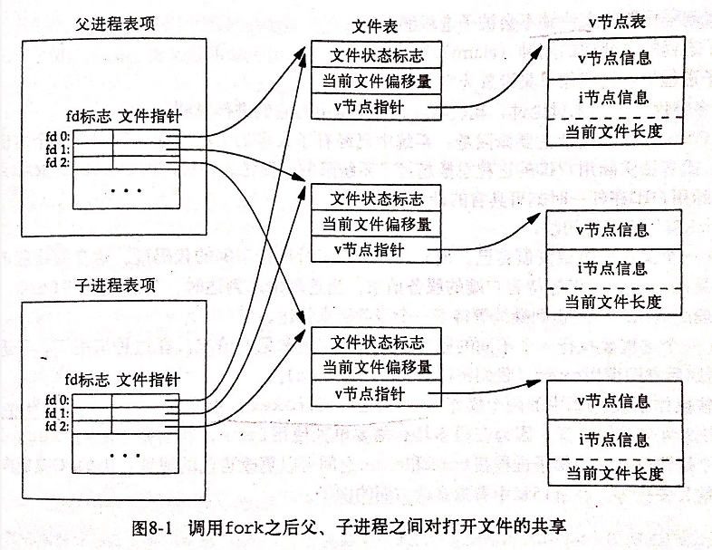

1. 进程控制
UNIX的进程控制，包括创建新进程、执行程序、进程终止
2. 进程标识符 pid
每个进程有一个非负的唯一进程ID。由于进程id是唯一的，因此可以用作其他标识符的一部分以保证唯一性（如把进程id作为名字一部分来创建一个位移的文件名）
ID可重用，进程终止后就可以重用，一般采用延迟重用算法，新建进程ID不同于最近终止的进程的ID。为了防止将新进程误认为之前的进程。
调度进程（交换进程，swapper）的ID为0，是内核的一部分，并不执行任何磁盘上的程序，也被称作系统进程。
init进程的ID为1，自举过程结束时由内核调用。负责自举内核后启动UNIX系统。绝不终止。是以超级用户权限运行的普通用户进程。
//其他标识符
#include<unistd.h>
pid_t getpid(void); //返回调用进程的进程id
pid_t getppid(void); //返回调用进程的父进程id
3. fork函数
调用fork()以创建一个新进程（子进程）
#include <unistd.h>
pid_t fork(void); //返回值，子进程中返回0，父进程返回子进程ID
父进程与子进程的返回值有区别，主要原因如下：
- 父进程返回子进程的id：一个进程可以有多个子进程，且没有一个进程可以获得所有子进程的进程ID（why？）
- 子进程返回0：一个进程只有一个父进程，总可以调用
getppid()获得父进程的ID。【且子进程ID不可能为0（0是交换进程），因此返回0不会有歧义】
3.1. 父子进程的复制与共享
子进程是父进程的副本，获得父进程的数据空间、堆和栈的副本（只是副本，逻辑上并不共享这些存储空间部分，但共享正文段）。调用fork()后，父子进程都继续执行指令。
由于fork()经常跟着exce()，一般使用写时复制(copy on write)避免复制。实现方法父子进程共享区域，且内核将访问权限变为只读，当任一方修改时，内核为修改区的那块内存制作一个副本。
一般而言fork()执行后，执行顺序不可知，即父、子进程都有可能先运行。
父进程所有的文件打开描述符都被复制到子进程中，且父子进程的每个相同的打开描述符共享一个文件表项。因此两者对同一个文件，使用一个文件偏移量。如果同时写入同一个描述符文件，没有同步的话，会导致输出互相混合。
通常情况，这样处理文件描述符：
- 父进程等待子进程完成。父进程不处理描述符，而子进程终止后，它操作过的任一共享描述符的文件的偏移量都已执行了相应的更新。
- 父、子进程都各自执行了不同的程序段，
fork()之后各自关闭不需要的文件描述符，互不干扰。

父进程很多属性被子进程继承：实际用户ID、组ID，有效用户ID、组ID，资源限制，存储映射，....，等。
fork()失败：1.系统进程数过多（通常意味着出问题）；2.实际用户ID的进程总数超过系统限制
通常的fork()用法：
- 父进程希望复制自己，使父子分别执行不同的代码段。（如，父进程等待客户端的请求，收到后调用fork使用子进程处理）
- 一个进程要执行一个不同的程序。（shell中常见），
fork()后马上调用exec()
4. vfork()函数
用于创建一个新进程，而新进程的目的是exec一个新程序。
不复制父进程的地址空间到子进程中，因为vfork()之后预期是马上调用exec()或exit()。让子进程在父进程的空间中运行（因此可能会改变父进程的数据）。
保证子进程先运行，只有子进程执行exec()或exit()之后，父进程才能被调度。（死锁可能：子进程在调用这些函数前等待父进程）
5. exit函数
正常终止进程的5种方式：
- main函数内执行return语句，等价于调用exit
- 调用exit，由ISO C定义，操作包括调用各终止处理程序（使用
atexit()登记），然后关闭所有标准I/O流等。但并不处理文件描述符，父子进程，多线程等。 - 调用_exit或_Exit函数，由ISO C定义，目的是为进程提供一种无需运行终止处理程序或信号处理程序而终止的方法。标准没有规定是否冲洗标准I/O流，UNIX中并不冲洗标准I/O流。_exit由exit调用。
- 进程中最后一个线程在其启动例程中执行返回语句，但线程的返回值不会用作进程的返回值，进程以终止状态0返回。
- 进程的最后一个线程调用
pthread_exit函数，同上一种情况一样，进程终止状态总是0.
异常终止的3种方式：
- 调用abort，产生SIGABRT信号（是下一种情况的特例）
- 进程接收到某种信号时，信号可能由进程本身、其他进程或内核发出。
- 最后一个线程对“取消(cancellation)”请求做出响应，按系统默认，“取消”以延迟式发生：一个线程请求取消另一个线程，一段时间之后，目标线程终止。
对于任意终止情形，希望进程能通知父进程它如何终止的。实现方法是，将退出状态（exit status）作为参数传给函数；在异常情况下，内核产生一个指示其异常终止原因的终止状态（termination status）。而在调用_exit时由内核将退出状态转换为终止状态。
对于父进程已终止的所有进程，它们的父进程都改为init进程，称之为由init领养。【当一个进程终止时，内核逐个检查所有活动进程，判断其是否为终止的进程的子进程，是的话则将其父进程id改为1】
另外，父进程如何检查子进程终止状态？内核为每个终止子进程保存了一定的信息（进程id、终止状态、CPU总时间等），终止进程的父进程调用wait或waitpid时可以得到信息。而内核可以关闭终止进程打开的所有文件，释放其所有存储区。
僵尸进程：已终止，但其父进程尚未对其进行善后处理。
**被init进程领养的进程终止时，会发生什么事？成为僵尸进程？不会，因为init被设计为只要有一个子进程终止，就会调用wait函数取得其终止状态。
6. wait和waitpid函数
进程正常或异常终止时，内核向其父进程发送SIGCHLD信号。这是一个异步事件，父进程可以选择忽略，或者提供一个信号发生时调用的函数。
wait与waitpid
- 如果所有子进程都还在运行，则阻塞
- 如果一个子进程已终止，正等待父进程获取其终止状态，则取得子进程的终止状态并返回
- 没有子进程，则立刻出错返回
因此，若调用wait，而没有终止的子进程，会阻塞
#include<sys/wait.h>
pid_t wait(int *statloc);
pid_t waitpid(pid_t pid , int *statloc, int options);
区别：
- 若子进程未终止，
wait使调用者阻塞，而waitpid可以不阻塞（通过选项设置） - 有多个子进程时，
waitpid可以控制等待的进程（调整pid参数） waitpid支持作业控制
waitid类似waitpid，但更灵活
7. 竞争条件
在OS中，多个进程企图对共享数据进行某种处理，最后结果取决于进程运行的顺序时，可认为发生竞争条件（race condition）
若fork()之后程序逻辑显式或隐式地依赖于执行顺序，可能会发生竞争条件。（OS不保证执行顺序）
简单处理方法：轮询（polling）
//子进程等待父进程终止，即自己被init领养
while(getppid() != 1)
sleep(1);
缺点：浪费CPU时间。
可以使用各种进程间通信方式（IPC）。
8. exec函数
调用exec并不会创建新进程，因此进程ID并不改变，只是用全新的程序代替了当前进程的正文、数据、堆和栈段。保持了一系列特征，如父进程ID，用户ID，文件锁，资源限制，进程时间等。
而对于文件处理，与描述符的一个标志有关（close-on-exec标志），若这个标志被设置，则在exec执行时关闭描述符；POSIX标准要求执行exec时关闭打开的目录流。